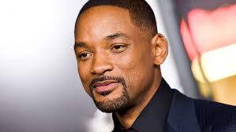

Being brought up in a caribbean household, I didn't really understand the concept of living beyond your imagination.I grew up with three older sisters and a family that was as big as a football stadium.Growing up I was able to experience the different cultures within her own. I was able to travel not only within the states as a child but to one of my home countries Jamaica. Visiting Jamaica allowed me to understand why my family came to America for a better life and opportunity, just like any other immigrant.I grew up knowing that in order to make it in society you have to do things on your own circumstances. I knew that one day I would be able to travel the world and share what I learned with others. Until I finally woke up, one day i realized that I couldn't just sit and feel sorry for myself. Growing up in my family if you wanted something you have to go after it. I wasn't living my American dream completely but it was better than nothing.Everyone has a dream, even if it's not the American dream so dont let the obstacles that are given to you take control of your life. I had to learn the hard way so now i'm going after my dream without letting societies obstacles get in the way.
Throughout my life i grew up dreaming about who i would become without the celebrity figures i dont think i would be who i am today...
 Will Smith is an actor comedian,producer, rapper, songwriter, activist anything you could think of thats who he was. His role on French Prince of Bell Air inspired me to never say you can't because of where you come from. If you want something go get it.
Barack Obama,our former president. When Obama was elected the nation was shocked,the first black president. Obama becoming president taught me that you should never let people tell you that you cant change the world because of your race/ethnicity.
Chris Brown,a singer,songwriter,producer,ddirector,artist,dancer,actor, visionary... and the list goes on and on.Chris has been in the media for both the good and bad but he never let it stopped him. Everyone was always quick to criticize everything he did after he went to prison so he took it and used it as motivation. Regardless of what people said he never let it stop his craft.